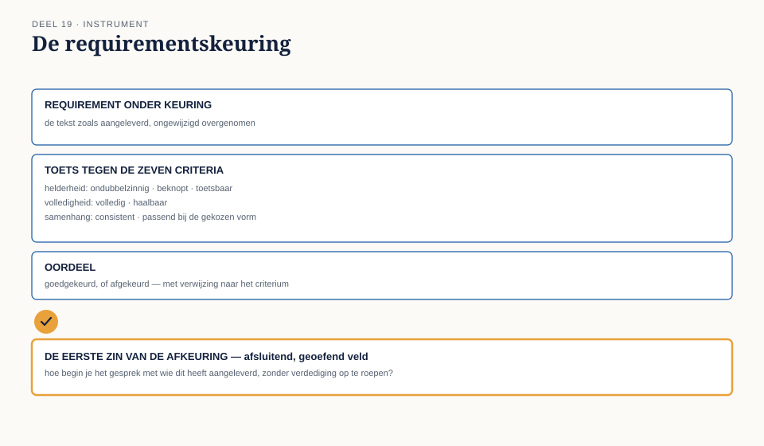

Deel 19 — Verifiëren en valideren; kwaliteitseisen aan requirements
Slidedeck · Ductus-cursus Business-analyse · niveau 2 · deel 19 van 30 · twee dagdelen · 30 slides
Slide 1 — Titel
Business-analyse — deel 19 Verifiëren en valideren; kwaliteitseisen aan requirements
Twee dagdelen — waar de meeste BA’s op vastlopen
Slide 2 — Terugblik
De vorm staat (deel 18). Vorm is niet hetzelfde als kwaliteit.
Slide 3 — Een sociale handeling, geen technische
Je kunt een checklist perfect beheersen en toch falen op het moment dat je hem moet toepassen.
Slide 4 — Twee scènes
Dagdeel 1: Sander, junior collega — laagdrempelig. Dagdeel 2: Bram, peer-architect — hoger sociaal gewicht.
Dezelfde inhoudelijke fout. Compleet ander gesprek.
Slide 5 — Waar dagdeel 1 over gaat
- Zeven kwaliteitscriteria
- Verifiëren versus valideren
- Afkeuren als sociale handeling
- De requirementskeuring
Slide 6 —

Zeven criteria: helder · ondubbelzinnig · volledig · haalbaar toetsbaar · consistent · passend bij de vorm
Slide 7 — “Binnen korte tijd”
Niet helder. Niet ondubbelzinnig. Niet toetsbaar.
Drie criteria, één woordgroep.
Slide 8 — [Opdracht 1]
Toets Sanders requirement op alle zeven criteria.
Slide 9 — Verifiëren
Voldoet dit aan de kwaliteitscriteria?
Een interne toets, zonder de bron erbij te betrekken.
Slide 10 — Valideren
Dient dit, ook al is het perfect geformuleerd, de juiste behoefte?
Terug naar de bron — zoals de tegencheck uit niveau 1.
Slide 11 — Beide nodig, niet uitwisselbaar
Perfect geverifieerd én de verkeerde behoefte: mogelijk. De juiste behoefte én slecht geformuleerd: ook mogelijk.
Slide 12 — [Opdracht 2]
Vier handelingen. Verifiëren, of valideren?
Slide 13 — Het zwaartepunt van dit deel
Afkeuren als sociale handeling
Voelt voor de eigenaar al snel als een oordeel over hemzelf, niet over de tekst.
Slide 14 — Drie principes
Specifiek over het criterium, niet de persoon Richting geven, niet alleen het probleem benoemen Toon aanpassen aan het sociale gewicht — het criterium niet
Slide 15 — Twee risico’s
Te zacht: een zwak requirement glipt door. Te hard: de relatie beschadigt, mensen leggen minder voor.
Slide 16 — [Opdracht 3]
Formuleer de eerste zin van een afkeuring aan Sander.
Slide 17 — De werkvorm van dit deel
De requirementskeuring
Verificatie · Validatie · Oordeel · De eerste zin
Slide 18 — Het veld dat het verschil maakt
Als je dit zou afkeuren, wat zou je zeggen — in de eerste zin?
Slide 19 —

De requirementskeuring — de eerste zin als afsluitend, geoefend veld
Slide 20 — [Opdracht 4]
Vul de requirementskeuring in voor Sanders requirement.
Slide 21 — Dagdeel 2
Dezelfde fout. Ander gewicht.
Vandaag: Bram.
Slide 22 — [Opdracht 5 en 6]
Vergelijk Sander en Bram. Wat blijft hetzelfde, wat verandert er in de opening?
Slide 23 — Twee openingen naast elkaar
Sander: “Ik mis een concrete grens — welke termijn had je in gedachten?”
Bram: “Dit sluit inhoudelijk goed aan — ik loop tegen één vraag aan waar ik je blik op wil.”
Slide 24 — Het criterium verandert niet
De vorm waarin je het brengt, wel.
Slide 25 — Rollenspel: drie oplopende gesprekken
Gesprek A: junior collega Gesprek B: peer, andere discipline Gesprek C: requirement van de stuurgroep
Slide 26 — Toestemming om weerstand te bieden
De “eigenaar”-rol mag tegensputteren. Een te makkelijke acceptatie leert weinig.
Slide 27 — [De drie gesprekken]
60 minuten. Wissel van rol na elk gesprek.
Slide 28 — Waar de scherpte het vaakst verwatert
Gesprek C — het gesprek dat het meest lijkt op Ayla’s situatie uit niveau 1, deel 3.
Slide 29 — Het gevolg van verwaterde scherpte
Een niet-toetsbaar requirement dat toch wordt goedgekeurd → een uitkomstenblad dat niet kan meten of het werkt → bevinding B7, opnieuw.
Slide 30 — Volgende keer
Specificeren, modelleren, verifiëren, valideren: compleet.
Deel 20: agile business-analyse — zelfstandig leesbaar, los aanbiedbaar, met een zijpad naar IIBA-AAC.